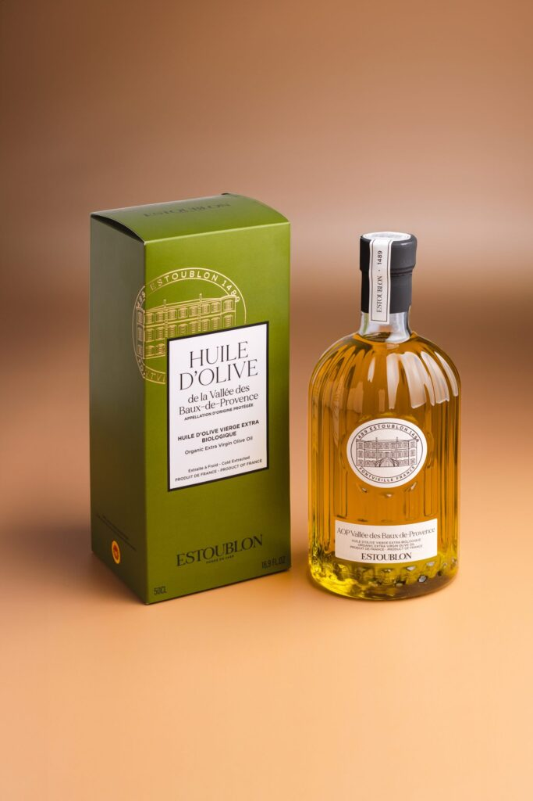

Château d’Estoublon AOP Vallée des Baux de Provence
Au Château d’Estoublon, situé en plein cœur du massif des Alpilles depuis 1489, les grandes variétés provençales sont reines, et révèlent l’essence du terroir des Baux-de-Provence, si singulier entre complexité et fraîcheur. Cette huile d’olive vierge extra est un assemblage Béruguette, Bouteillan, Grossane, Salonenque et Picholine, pressée dans les 24h suivant la récolte.